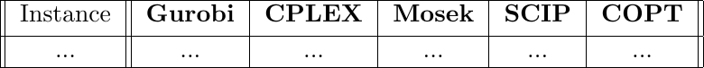

Benchmark Performance
Solver Benchmarks
These benchmarks were run on a [computer specifications].
The following solvers were tested:Gurobi - [version]
CPLEX - [version]
Mosek - [version]
SCIP - [version]
COPT - [version]
The recorded values under each solver represent the best objective score found.
Spin Glass Solver Benchmark

Spin Ice Solver Benchmark

Ferromagnetic Solver Benchmark
Anti-Ferromagnetic Solver Benchmark

RL Benchmarks
These benchmarks were run on a [computer specifications].
The following RL methods were tested:MCPG - [version]
REINFORCE - [version]
ECO-DQN - [version]
S2V-DQN - [version]
iSCO - [version]
The recorded values under each RL method represent the best objective score found.
Spin Glass RL Benchmark

Spin Ice RL Benchmark

Ferromagnetic RL Benchmark

Anti-Ferromagnetic RL Benchmark

Physics Benchmarks
These benchmarks were run on a [computer specifications].
The following physics methods were tested:VCA - [version]
The recorded values under each physics method represent the best objective score found.
Spin Glass Physics Benchmark

Spin Ice Physics Benchmark

Ferromagnetic Physics Benchmark

Anti-Ferromagnetic Physics Benchmark